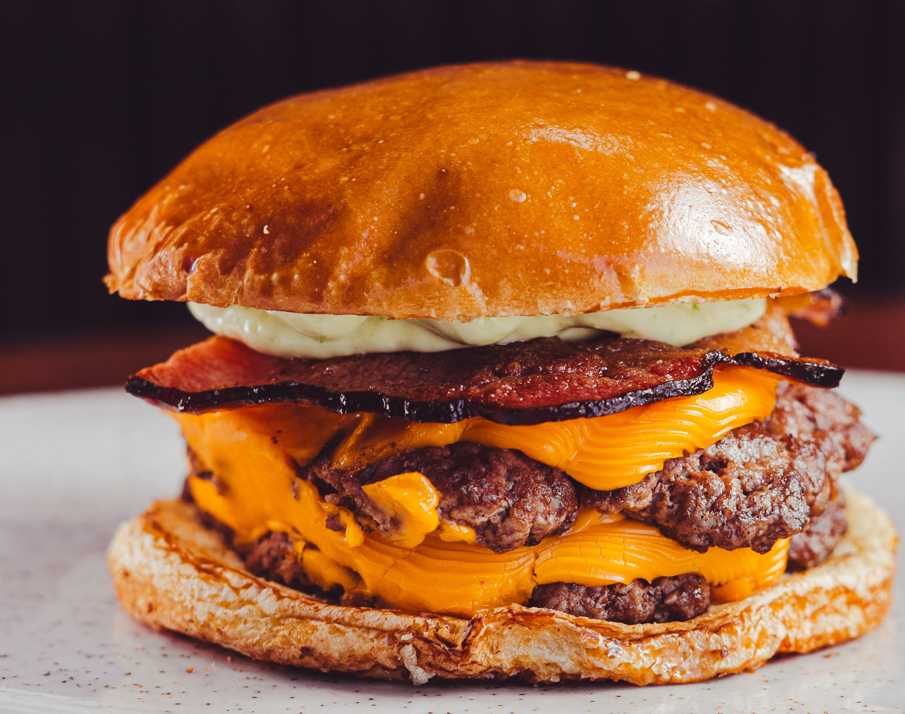

Home
Bacon CheeseBurger

Whats that smell? Is it coming from the kitchen? I've never smelled something so amazing. Said the man as he walked past the house, a smell we all love, the juicy applewood bacon fat sizzling on the pan. While someone flips the burger on top, an unmistakable smell. Everyone knows it, and majority of people cant resist. Its almost a love letter to your stromach.
Ingredients
- Ground Beef 80/20(Or whatever your preference)
- Thick Cut Bacon(whichever your preference)
- Tomato
- Lettuce
- Potato Bun(Whichever your preference)
- Egg
- Mayo(Optional)
- Ketchup(Optional)
Steps
- Set your groundbeef in a bowl
- Crack 1 egg into your beef
- Mix beef with hand until egg disappears and meat is mashed together
8oz balls
- Roll beef into
- Place frying pan on stove (medium heat)
- Take Bacon and place on pan about 1/2inch apart
- Fry bacon till crispy
- Lower heat on stove and place
- Place beef Patties onto pan
- Raise heat back to meduim heat
- Smash burgers down for shape
- Cook for about 6-8 minutes each side(depending on how you like)
- Once finished choose a cheese and place on patties and then add bacon on top, then cover with lid on low heat
- Slice tomato and lettuce
- Set up bun
- Place lettuce on bottom bun, fallowed by the bacon cheese patty, then lettuce on top
- (Optional)Light Mayo and Ketchup on top bun and close